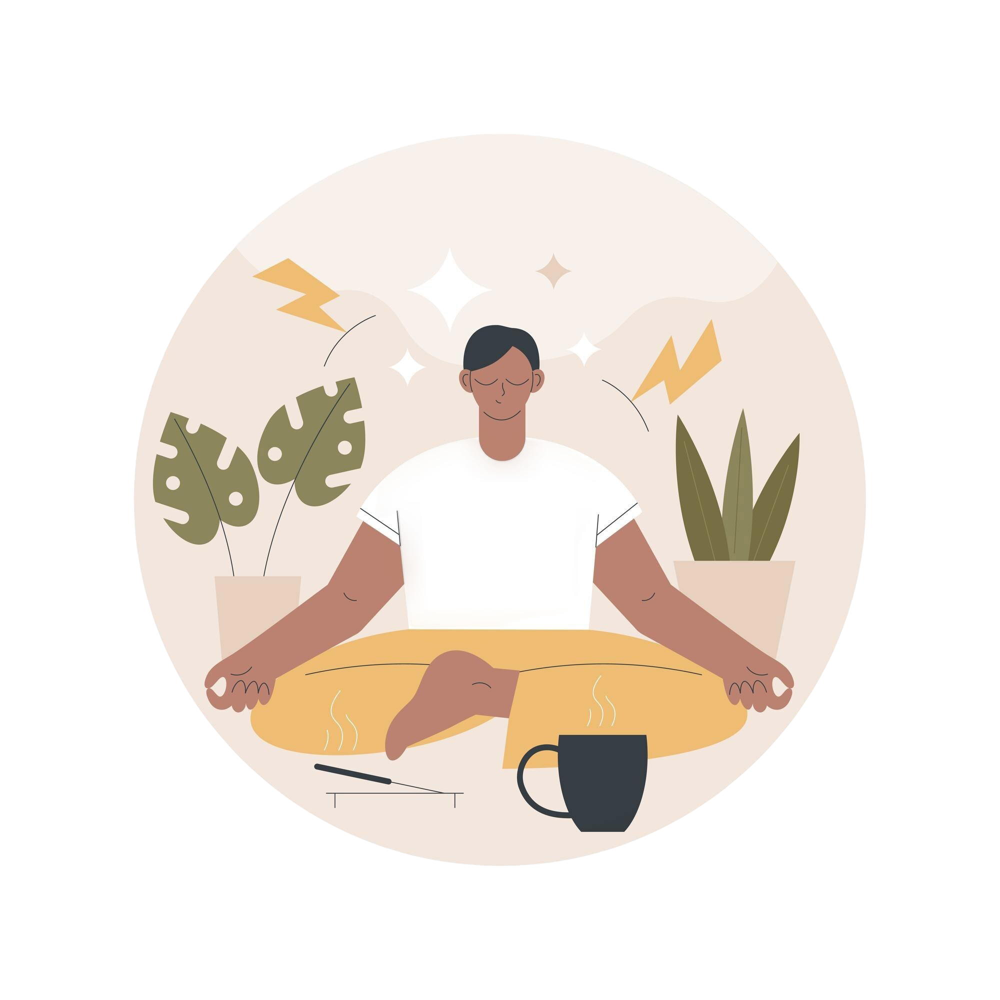
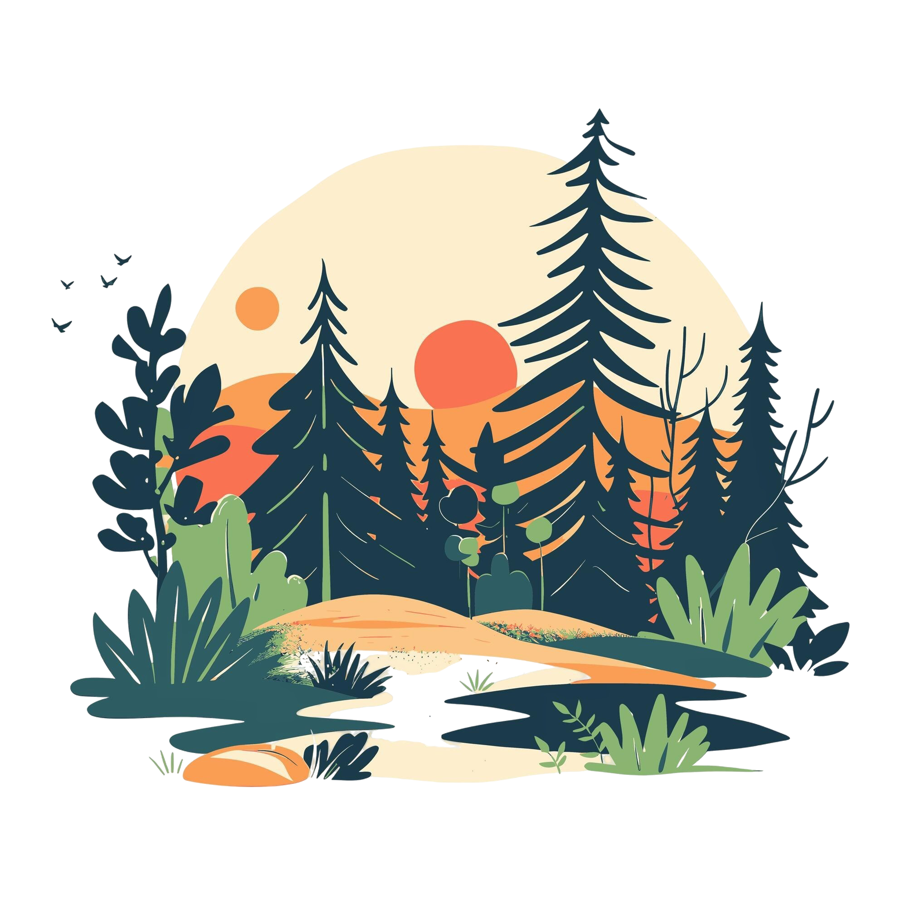
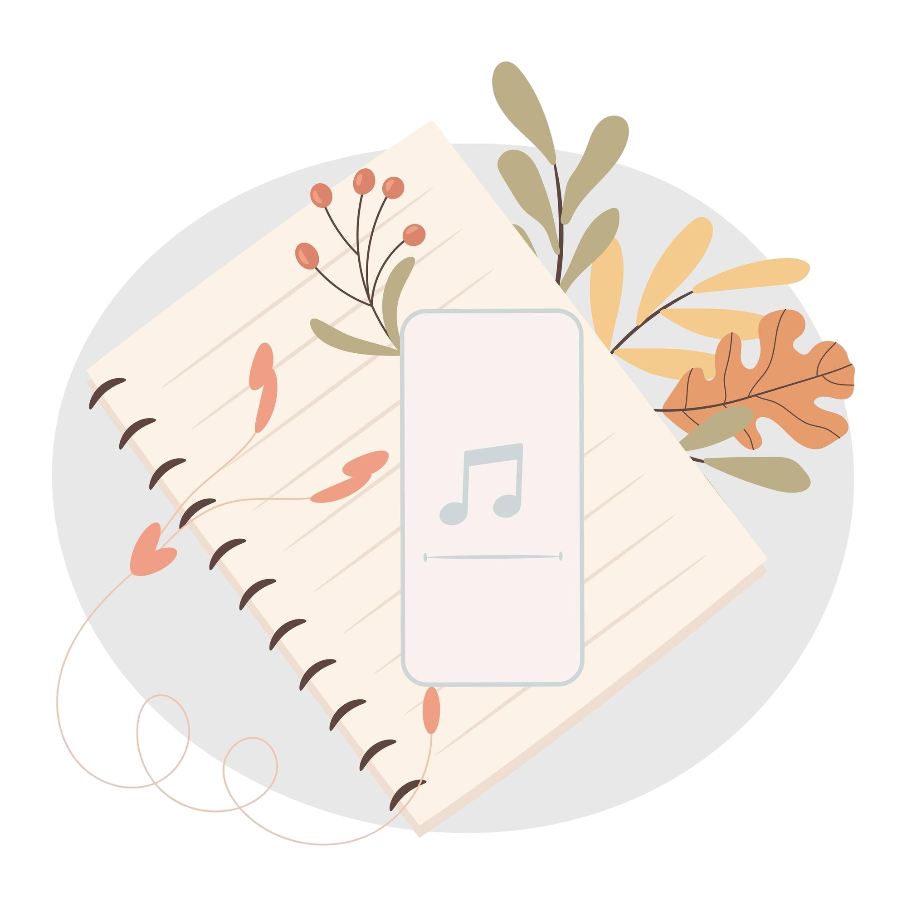

Asioita, joita voit tehdä päivittäin
Pienet asiat, suuri vaikutus

🌼 Yhteydenpito läheisiin
Yhteydenpito tuo tukea ja iloa. Soita tai viestittele läheisillesi päivittäin.

📝 Kirjoittaminen
Kirjoita ajatuksia ja tavoitteita. Se selkeyttää mieltä ja helpottaa tunteiden käsittelyä.

🌿 Luonnossa oleminen
Käy kävelyllä tai istu hiljaisessa ulkotilassa. Nauti raikkaasta ilmasta ja selkeytä ajatuksiasi.

😴 Unen priorisointi
7–9 tuntia laadukasta unta tukee palautumista ja jaksamista.

🍎 Syö ravinteikkaasti
Syö monipuolisesti ja muista juoda vettä – keho ja mieli kiittävät.

🎼 Rentoudu mieluisilla tavoilla
Kuuntele musiikkia, lue tai ota kylpy – tärkeintä on oma rauhoittumisen tapa.